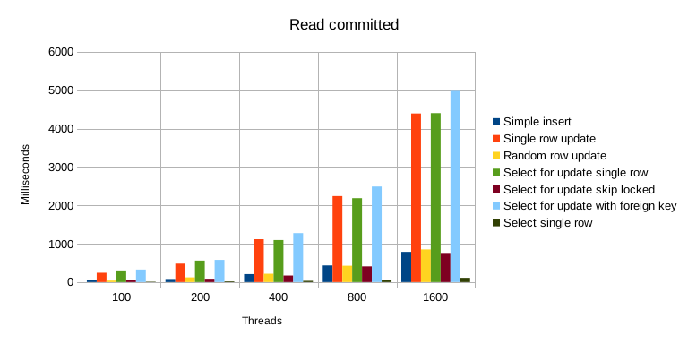
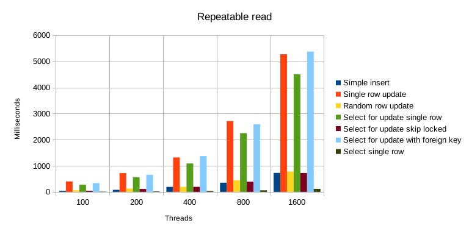
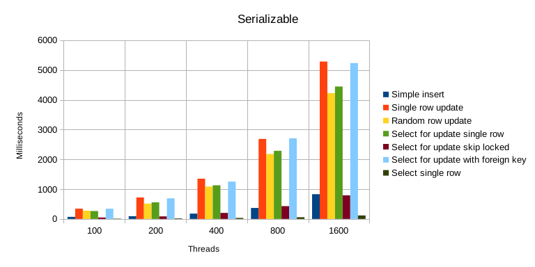
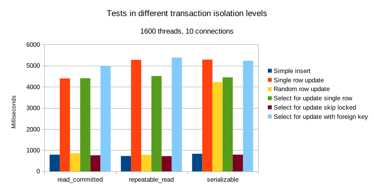

More:
When preparing the article about concurrency in PostgreSQL (Database transactions, concurrency, isolation levels, and PostgreSQL) I was also working on a benchmark that would give me an overview of how different operations are performing in a concurrent environment, under different load, and under different configuration (transaction isolation level).
I’ve prepared a C++ application that benchmarks a number of different operations in Postgres. It simulates a concurrent environment with different isolation levels. It’s available on my Github account.
There’s a number of tests to see how SQL operations are affected by increasing concurrency (using the --threads parameter). In this article, I present results obtained by running the application with 100, 200, 400, 800, and 1600 threads at once.
You can see the SQL code executed by tests here.
The following tests were performed:
Simple insert: inserts a new row into a table.
Single row update: updates a single row in a table. In a concurrent environment this leads to a lot of waiting due to concurrent transactions waiting to be able to modify the same row. In case of “repeatable read” and “serializable” isolation levels, it needs to handle serialization failure (i.e. when a transaction cannot be committed because another transaction already committed their changes). Those cases are retried until they succeed.
Random row update: similar to the single row update test but instead updates a random row. This doesn’t constantly put a lock on the same row.
Select for update single row: runs a select for update query to put a lock on a single row.
Select for update skip locked: runs a select for update skip locked query to select the first unlocked row.
Select for update with foreign key: all transactions run select for update queries on table e which has a foreign key to table d. The outcome of this is that the table d gets locked, too.
Select single row: runs a simple select to get 1 row.
 Benchmark results for the “read committed” isolation level.
Most expensive operations include: many concurrent updates of a single row, select for update queries (especially when foreign keys are involved). This is understandable, updating data concurrently is a dangerous operation so it requires a lot of care.
Many concurrent transactions trying to update the exact same row gets very expensive. For instance, updating the same row concurrently is about 5 times more expensive than updating a random row, 2222 ms vs. 425 ms (800 threads, 10 connections, read_committed isolation level).
Concurrent updates get significantly less expensive if they’re not all trying to update the same data but instead lock different, individual rows (except at “serializable” isolation level, see later).
 Benchmark results for the “repeatable read” isolation level.
Simple select queries are cheap.
Insert queries, even if done concurrently, are actually quite cheap. This is because they don’t require the same kind of protections as updates do.
Select for update with skip locked option is quite cheap. This is because it doesn’t wait to get required data but instead returns immediately (which means it might not necessarily get the data you want).
Select for update is also dangerous because you can easily put more locks that it may seem. This happens due to foreign keys. Test “select for update with foreign key” is the slowest of all on “read committed” and “repeatable read” isolation level (but not on “serializable” level).
 Benchmark results for the “serializable” isolation level.
Insert, select for update, (with and without skip locked) perform similarly in all isolation levels. select for update (with foreign key) and especially updating a single row get more expensive at higher isolation levels. Comparison of operations across transaction isolation levels.
It’s written in C++ and uses pqxx library to connect to Postgres. It requires a C++17 compiler (tested with gcc 10). It’s been tested with PostgreSQL 12.3.
It has a number of parameters that change its behavior. Run the application with --help option to see them all.
--threads option tells the program how many threads it should run. By default, the application will open 10 connections to Postgres (it can be changed with --connections) and run threads to simulate the concurrent access to the database. At the end of a run, it prints the timings for each operation.
To gather benchmarks, it’s useful to run it with --repetitions [n] which will run every test n times and compute average timings.
The transaction isolation level used in tests must be changed in the source code (src/tasks.hpp - isolation constant). Available options include: read_committed, repeatable_read, and serializable.
The data gathered for the results presented here is available in an .ods spreadsheet.
To find out how to run the tests on your own machine, see the README file.